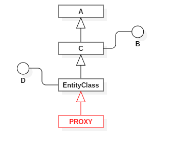
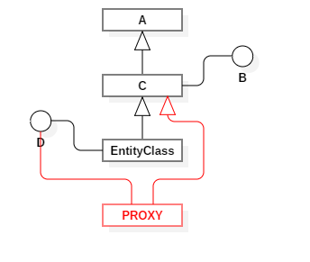
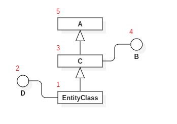

Под капотом¶
В данном разделе представленно описание работы K-S под капотом, а также более подробно описаны некоторые не очевидные моменты работы K-S.
Вызов agent.protect(…)¶
Сперва Агент проверяет существует ли схема доступа для класса этой сущности, если нет, то он создает пустую схему и настривает её с помощью источников конфигураций (аннотации, KSDL и т.д.).
Далее Агент делегирует
protectсхеме.Если схема НЕ имеет прокси класса для этой сущности - он создается. Для этого есть 2 сценария:
Если класс сущности можно унаследовать - прокси класс наследует класс сущности.
Если класс сущности нельзя унаследовать - прокси класс реализует все его интерфейсы (до ближайшего родительского класса) и старается унаследовать ближайший родительский класс.
Далее схема подготавливает конфигурацию для переданного набора ролей.
Процесс создание конфигурации, представляет из себя поиск правил доступа/интерцепторов и т.д. для конкретного списка ролей (переданных при вызове
protect) и формирования “ответа” на запрос доступа к свойству:предоставить доступ - делегация вызова объекту оригиналу.
запретить доступ - выброс эксепшена.
вызов интерцептора - делегация вызова интерцептору.
Поиск выполняется по следующему алгоритму:
Получаем данные от класса.
Получаем данные от реализуемых им интерфейсов.
Поднимаеся на класс выше по дереву наследования.
В итоге мы получаем такой порядок поиска:
Наивысший приоритет имеет первое найденное правило/интерцептор, а наименьший - последнее найденное.
В завершение схема создает прокси объект с подготовленной конфигурацией и оборачивает в него оригинал.